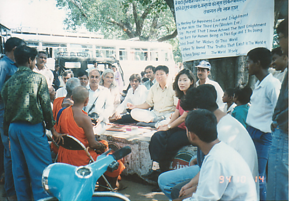

10th October in 1994, 3 of our party went to Calcutta station in order to go to Bodh Gaya. We were unable to get tickets to our next destination easily. The station was crowded, with long queues of people lined up at each ticket window.
Because we were imminent, we asked whomever where train tickets to Bodh Gaya were sold. We were told to go anther part of the station, but once we got there we were told to go to another location. Once there, a person who listened to us indicated somewhere else. Within the station, we spent over thirty minutes just to find a ticket window that sold tickets to Budh Gaya.
Another thing that caused difficulties was that there was a longer queue in front of this ticket window than any other ticket windows.
We were anxious to see if we could purchase train tickets to depart that day. The delay was due to slow action by the cashier, who was selling tickets with an old model computer. We, who were standing in a long queue that didn’t easily shrink, were gloomy.
Some tough men came near to us and said they would get train tickets for us, so we exited the queue. We asked these people how much a train ticket to depart that day would cost but they made us wait, came back after a time, and said it was impossible to get train tickets to depart that day. In addition, the purchase price quoted was several times greater than the ticket price in the station.
We gave up dealing with these people and decided to go to the stationmaster’s office in person. We met the stationmaster and explained the purpose of our travel to India, and that we had to go to Bodh Gaya and requested his help. However, we were refused flatly. It was difficult for us to get tickets urgently. So, finally, we gave up on buying tickets and went back to our hotel.
Upon our arrival back at the hotel, our leader went out alone. He soon returned saying that he needed an interpreter and took me out. Cheap accommodation around the hotel was plentiful, of the sort that rucksack travellers utilised. businesses focused on travellers, and small travel agencies that sold cheap air plane tickets.
Leader took me to a travel agency and told me to translate his words.
‘Is it possible to buy such and such a train ticket?’
After the owner of the agency listened to our words for a while, he introduced us to another house.
This house was located on the road, and doing business with a telephone and two chairs. Leader asked the owner of the small shop.
“Can I get train tickets to depart this evening?”
The owner of the shop handed over a piece of paper and asked to write down in detail the destination and class of train that we wanted. As we passed over the paper, the shop owner made a phone call. Afterward, he said that day was impossible and asked about tickets for the day after. At that time, leader bargained with the owner of the shop.
“I will put a premium on.”
The owner asked us how much we would put on.
Leader said if the price was 1000 rupee per person, he would purchase tickets. The owner requested payment of 1,500 rupee, so leader said he would pay the middle.
The owner made phone calls again here and there with enthusiasm. After a while, he said it was possible to get the tickets that we wanted so we paid the agreed upon sum. After receiving the payment receipt, we received a paper on which the train’s name, number, and seat number were written by the shop owner. The shop owner said that when we caught the train, the person in charge of the compartment would come and give us tickets.
Therefore, we could take the train that departed at 8 O’clock that evening from Calcutta station.
The compartment of the train we took was being utilised by upper middle class Indian people. What we originally ordered and paid for was four people in a four sleeping berth, but what we actually got was six people in a 2nd class compartment.
We had to inevitably share the compartment with other Indians besides our party. On top of this, we had to share with other Indians who couldn’t get tickets besides Indians who had purchased tickets.
The train conductor told us the train would arrive in Gaya station around half past 2 at the middle of the night. We had to pay attention to our belongings at all times if we weren’t to lose them. Indians in our compartment were continuously having conversations mixing English and Indian, whilst Indians who took the train without a ticket, asked the train conductor to find them 2nd class sleeping berths whenever he passed.
We were anxious not to pass Gaya station, so we checked every station the train stopped at. At dawn the next day the train conductor came to us and told us that the next station was Gaya station, and to get off with our luggage. Exhausted our party collected each others belongings and got off the train.
The reason we had to get off at Gaya station was because there wasn’t a train station in Budh Gaya. In order to go to Budh Gaya we had to get off at Gaya station and take another form of transportation.
Despite it being daybreak, Gaya station was in confusion. People were lying on the floor, trying to sleep in every corner of the station, swarms of flies gathered where ever lights were.
We went to a restroom that only 1st and 2nd class customers could use. A woman was checking tickets at the 2nd floor entrance in order to regulate general passengers. The restroom was divided into women’s and men’s use, and there was a toilet and washroom on one side. However, the facilities were far from our expectations. People were laying cloth on the floor and lying here and there. A few chairs were there, so our party could rest for a while.
Because we were worried about losing our belongings, we gathered our luggage and passed a sleepless night watching over it.
Leader went down station square pushing passed people. After a while leader came back. The vehicle that leader bargained for and reserved was called a rickshaw. It was made by reconstructing a motor cycle to seat a few people, a little vehicle that Indians utilise a lot. This rickshaw had 3 wheels, and a seat for two or three people seated closely. Three of our party rode on the rickshaw with three big pieces of luggage. Besides our party the driver took on one of his friends. Then the rickshaw set off.
As it was our first trip, the roads were new to us, and as it was dark we couldn’t neglect to be on the alert. The rickshaw that was carrying us stopped after a half hour drive. We were completely tensed, and asked what the reason was. The driver remained cool and said the fuel had run out.
Leader called attention to us.
“If an unpleasant thing happens, each of you just run in different directions.”
Prepared for an extreme situation, we waited for the driver to return with fuel. The driver came back about an hour later with fuel, the rickshaw started to move again.
Because we got some general knowledge about Buda Gaya and possible accommodation, before leaving Calcutta, when we arrived in Buda Gaya we stopped the car in front of Butane temple. We went into the temple, and asked if we could get rooms in their guesthouse.
A monk, who was bargaining the price of the room with us, said it was 80 rupee a room on the ground floor, and 400 rupee a room on the first floor. Therefore, we decided to take rooms on the ground floor. At that time 80 rupee was about 3 dollars.
Leader put his belongings in his room, changed his clothes and told us to go to have breakfast. However, we couldn’t find a restaurant in Budh Gaya that we thought would exist.
It wasn’t long after we left the guest house and were walking when a boy around 14 years old came over to us and, in fluent Japanese, asked where we were going. Because I luckily could speak Japanese, I asked the boy where we could have a meal. The boy took us to an isolated place on a street.
Putting up a tent and laying a board on one side, someone was making food on the roadside.
We forced ourselves to eat this food, which wasn’t our taste. We asked for rice, but they made traditional Indian spicy side dishes. We cut seaweed that we had brought, and mixed rice with a little bit of a side dish, and wrapped in seaweed then ate, barely.
When we finished breakfast, the boy who showed us the restaurant caught up with us again, with some other boys also following after. We refuse them if they would bother us, but they said to feel easy as they don’t ask for anything. Therefore, we went to “Main Temple” direct with them, to the place where Shakyamuni Buddha obtained the enlightenment, and we were introduced to the owner of a shop near the main temple.
The owner of the shop was very interested in, and cooperative, after listening to the purpose of our visit, and what leader does. The rumour that our party came soon spread within the small Budh Gaya village. Therefore, we were able to meet many other people with ease, and so found a way to do that we were trying to do.
We showed a message manuscript that we had written to local man called Tipanka, who could speak English. He translated the manuscript to English and Hindu for us. We also went to Gaya with his aid where we had a hanging banner made in a print shop with writing containing the content of the message. This was done on a big cloth painted in a signboard shop. Hereby we were ready for our work.
When it became 10 O’clock in the morning, we went to a down town square next to the main temple where shops were lined. Hanging the message written on a cloth on a big bodhitree in the square, we started to have meetings with people under the tree.
People, at first, didn’t come near us as though they were on guard against us. Most of the people were only watching our party from a distance. When time passed people began to come near to us and asked questions. Their questions were very simple things.
Time passed. Buddhist priests of the main temple passed in front of us. Some young men in Budh Gaya blocked their way and told them to go to leader and ask questions. Priests, who were caught by these young men, unavoidably had to come in front of our party and leader gave them simple teachings.
One of them said.
“Buddha already told us every word that you have said.”
Leader answered.
“You are the people who know one, but don’t know another one. However much good food, when it gets changed in quality and goes bad, it become the same as poison. Good teaching is also the same as this. Truth that is changed in quality is as same as poison. If you don’t realise it, however much Buddha’s teaching is good, you won’t get anything which is helpful for yourself.”
The priests could say no more.
Young men around us held up people passing through, indicating leader and saying to them that if they had anything they wanted to know to go to leader and ask.
Coaches carrying tourists were arriving continuously by the bodhitree, under which we were sitting. A party got off a coach, and a woman among them came over to our party. She was very interested in her future. She asked if she would be successful or not in her future.
Leader answered like this.
“I would be able to answer the question as to whether you would be successful or not after seeing what you are doing.”
However, the woman didn’t understand leader’s words easily. Leader said her again.
“Things of the world appear by a formula. Because decision is deffered according to where and what things are.”
And yet, she didn’t understand these words easily. Leader shouted toward her party.
“Someone came to me this morning and said life is suffering.” So I said this,
“If you live without knowing existent things, things in life will exhaust life. If you live knowing existent things, then things in life will cause life to be pleasant.”
After listening to leader’s words, the woman said,
“I’d like to stand for parliament election.”
“What is the reason you cannot stand for election?”
“In order to stand for election I have to be named by a political party, but it is difficult.”
Leader replied, “Hitler didn’t have any supporters at first, but by building support by himself he stood for parliament and won. Do you really want to be a member of parliament?”
“Yes, I do”, she replied.
“If you tell me the reason clearly why you want to be a member of parliament, I will tell you the way to be a member of parliament.”
“If I become an MP, I can do things that will be helpful to people in this area.”
“People, whoever say the same as you. But when they become an MP, they are different. So, if you tell me what you will try to do, and your plans in detail, I will tell you in detail how you can get support. What I see while I am having this conversation with you, it isn’t easy for you to be elected as an MP, with your wisdom and judgement. However, If I give you things that I have, it won’t be difficult for you to be elected as an MP in this area.”
She replied, “Thank you very much. But I’d like to know if my life would be successful or not.”
“Do you mind if my answer doesn’t suit your taste?”
“No.”
“Destiny is neither fixed nor fluid. If you don’t try to better yourself, you will live in the fixed destiny and die, and if you make better destiny, your destiny will be fluid. Even if I say certain words, whether those words are correct or incorrect depend on your behaviour. Because of that, I won’t say about individual destiny. However, if you want to have a good destiny, I will tell you the way to make good destiny by yourself. If you want to be rich, I will tell you the way to be rich. If you want to be a politician, I will tell you the way to be a politician.”
The woman and her party listened intently to leader’s words, and when his words finished, they said thank you and left.
One man, who was standing in the circle, asked if he could ask a question.
And leader said to him. “What question are you going to ask me?”
The man asked, “Could you tell me what clothes my wife is wearing now?”
Leader answered.“If you take me in front of your wife, I will see your wife and then I will immediately tell you what clothes your wife is wearing.”
The man, who questioned, said sneering. “Everybody can do such a thing, can’t we?”
Leader asked him again. “Then why did you ask it of me?”
Other men, who were standing near to him, said, “Otosang (father in Japanese) in Budh Gaya knows everything. Sitting near the river, he knows what is happening in another’s house. And if we ask what clothes our family is wearing, he knows it and tells us.”
After listening to these words, leader said to these people, “If so, can you take me in front of him? If he can answer my questions I will give you a chance to earn a lot of money.”
Young men about the place showed interest in leader’s words, so our party and these people went to visit a man who lived near the Budh Gaya river.
When our party arrived riverside, the young men who brought us there went before us to the eccentric person who lived on the riverside, and spoke to him about our party. A lot of people, who had heard our story, were following behind us in order to watch. The man, who the people of Budh Gaya called ‘Otosang’, listened to the story of these young men, made our party wait for a while by the riverside. After a while, the young men took our party in front of the eccentric man.
When leader met the man, who called ‘Otosang’, he said like this.
“I didn’t come here with intent to give you a trouble. These people, who don’t know anything, took me to you. Are you able to recognise me?”
This man, who told others fortunes, and answered peoples questions mysteriously, dropped his head and said, “You are the one who has a very strong power. I’d like to work like you.”
Leader laughed loudly and said.
“It is difficult for everybody to work like me. But if you obtain enlightenment, you will be able to work like me.”
As the conversation finished so flat the young men who took our party there wore a disappointed look.
Leader stood up without further questioning the eccentric man who couldn’t even raise his head.
The achievements of our party during the day spread out among the people in a city as little as Budh Gaya in the twinkling of an eye.
That night, after dinner, we were having a rest on the grass in our accommodation building. Boys who followed us that day came to us and said a woman wanted to see leader.
Leader told them to bring her.
The woman, who called at our accommodation said this.
“My husband died 2 years ago. My husband had no illness before he died, nor on the day he died either. He worked well, as usual, then returned home and died without any reason. Are you able to know the reason why my husband died?”
Leader answered.
“There is dead man in your house. The dead man pressed your husband below the shoulder. When the place was pressed, the blood vessel that linked to his head was pressed. Because blood couldn’t go through to his head normally, his brain came to stop its activity. When this phenomenon occurred your husband couldn’t express any consciousness, like a vegetable, and only felt oppressed in one of his breast. When your husband died, the hospital would have diagnosed a heart attack. Is this correct or incorrect?”
The woman answered it was correct, and asked again.
“Could you tell me what’s the reason our business doesn’t pay?”
Leader answered.
“It is because there is a dead man in your house. The dead man makes people not come.”
As though the woman solved her doubt, she said thank you and returned.
And a few day passed. A young man called on us and requested we give a talk for beggars in his village.
Leader gave a willing consent, and our party went to the village.
Most of the people there were people who were begging from tourists, and even though I translated leader’s words in English, only a few people understood English. However, leader explained for them about things that make things of the world exist. But it looked like no one among them understood leader’s words correctly.
In front of leader who had been explaining the things of the world enthusiastically for more than half an hour, a young beggar suddenly produced a notebook. It was a notebook that recorded contributions of visitors who called at the village. Leader looked at the notebook for a short while and said to them.
“You have to finish the life as a beggar in your life. If you continue such a thing, your children will do so, and your children’s children will be beggars. You have to learn the way to live by yourself. Thus, you have to learn to work, and even if it is hard now, you have to teach your children letters and work. That is the only way you can fill up your wants.”
Speaking the words, leaders face was unusually flushed, and the boys, who took our party there, listened to leader’s words and agreed.
It had been about a week since we arrived in Budh Gaya. That day we were in Butane temple. Several boys in the village called there and wanted to see leader.
I asked them what was the matter they wanted to see leader about. The boys said a person from Gaya visited them who said that he was enlightened. He was a Nepalese man, an expert in cancer, and taught many followers in Gaya. The boys said that the man had heard the rumour that a guru (great teacher) had come to Budh Gaya and so he had come to Budh Gaya and was staying at a house in the village in order to confirm the fact. The boys asked if leader would like to see him.
I reported their story to leader, leader laughed and went with us to the boy’s house where the person from Gaya was staying.
When leader met the Nepalese man he asked like this.
“Do you see the third eye on my forehead?” Leader let the man from Nepal see leader’s face closely.
The Nepal man said.
“It’s not the third eye.”
After listening to the words, leader said again like this.
“Then I will ask you 10 questions, if you answer two of my questions correctly, I’ll recommend the words that you said just before.”
The Nepal man said, “I don’t understand English very well.”
Leader said, “we shall do it in Hindu, shan’t we? I know someone who can speak Hindu and English in this village, letting him translate for us, we will be able to transfer each others opinion?”
People who had come from Gaya with the Nepal man agreed with leader’s words, and boys in Budh Gaya village said it was a good idea. Because people favoured that opinion, if the Nepal man couldn’t help, with his party came to go Tipanka’s house who can speak Hindu and English.
Leader asked Tipanka to translate for us, Tipanka willingly consented.
Leader first asked the Nepalese man a question in regards to his intent.
“Would you like me to ask you a question first or would you like to ask me a question?”
The Nepal man said, “You ask me a question, first.”
He also said he would answer leader’s question.
Leader asked, “What is Truth?”
The Nepal man seemed to be confused when leader asked him this question. And he started to answer tediously. Leader clapped his two hands strongly in front of the many people watching. A ‘Clap!’ sound came out from between his hands. Leader asked the man from Nepal.
“From where did the sound come?”
The Nepal man answered, “The sound came from the universe.”
Leader laughed at the answer and said, “I made the sound bumping my hands. You are explaining what it is too leaping.”
The Nepalese man was upset and said in an excited tone.
“Then I will ask you a question.”
Leader said with composure.
“Then you ask me a question.”
The Nepal man asked.
“What is it which is faster than light and faster than sound?”
Leader answered immediately like this.
“It is consciousness. The light takes a few minutes to come to earth. But consciousness can see the sun at once.”
Tipanka queried the Nepal man while he was translating, “Is it correct or incorrect?”
The other party said it was correct. And he said to leader, “I gave you too easy a question.”
Leader replied, “There isn’t a thing which is particularly easy and difficult in the world. Things of the world, every question and answer, exist in what it is. I see what it is and only answered what it is to you.”
People who listened to leader could say no more. When leader saw that the atmosphere had become heavy, he said to the Nepalese man in gentle manner.
“You will be able to be my good friend. Let’s make good friends.”
Saying so, leader stretched out his hand.
And the man from Nepal agreed to these words and shaking leader’s hand smiled.
The people gathered there clapped.
Our party come out of that place soon. We were going to leave Buda Gaya the next day. Our next destination was a city called Saranadh.